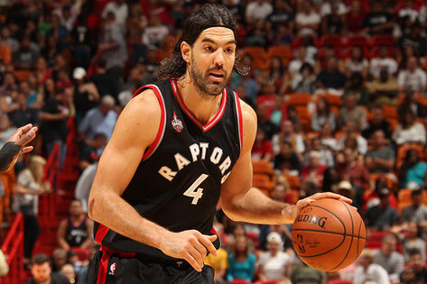

La Generación Dorada fue una camada de basquetbolistas argentinos que en el lapso de más de 15 años consiguieron para la Selección de básquetbol de Argentina gran cantidad de medallas de oro, plata y bronce en todos los torneos de mayor relevancia organizados por la FIBA: Juegos Olímpicos, Mundial, FIBA Diamond Ball y Campeonato FIBA Américas. Para muchos se trató de los "mejores equipos de la historia del deporte argentino ".
HISTORIA
GENERACIÓN DORADA
GRANDES PASOS POR EL EXTRANJERO
MANU GINOBILI
Emanuel David Ginóbili (Bahía Blanca, 28 de julio de 1977), más conocido como Manu Ginóbili, es un exjugador de baloncesto argentino, considerado por muchos especialistas, deportistas y entrenadores de este deporte como el mejor jugador de la Argentina, Latinoamérica y uno de los cien mejores y más influyentes de la historia de la NBA y uno de los mejores provenientes de la FIBA de todos los tiempos. Jugaba en la posición de escolta y formó parte de los San Antonio Spurs de la NBA durante 16 temporadas, desde 2002 hasta 2018, hasta que el 27 de agosto de 2018 anunció su retirada del baloncesto profesional. Desde septiembre de 2021, forma parte de la dirección técnica de los Spurs como asesor de operaciones y desarrollo de jugadores de la franquicia.
LUIS SCOLA

Luis Alberto Scola (Buenos Aires, 30 de abril de 1980) es un exjugador de baloncesto argentino, que disputó 25 temporadas como profesional, repartidas entre Argentina, Europa y la NBA. Con 2,06 metros de altura jugaba en la posición de ala-pívot. Sus inicios profesionales fueron en Club Ferro Carril Oeste, en la liga nacional de su país. También se destacó en la NBA y en la liga española de baloncesto. En 2002, fue seleccionado en la segunda ronda del draft de la NBA con el número 56 por los San Antonio Spurs y luego pasó por Houston Rockets, Phoenix Suns, Indiana Pacers, Toronto Raptors y, finalmente, Brooklyn Nets.
MEJORES FIGURAS DE LA LIGA
MARCELO MILANESIO
Marcelo Gustavo Milanesio (Córdoba; 11 de febrero de 1965) es un exbaloncestista destacado de Argentina. Entre sus logros más importantes se destacan dieciséis títulos ganados, además de ser considerado el mejor jugador de la Liga Nacional en Argentina en dos oportunidades, y ser el líder en asistencias del Campeonato mundial de baloncesto de 1994. Comenzó a jugar al básquetbol en el Club Fábrica Militar de Río Tercero. Junto a su hermano Mario se incorporó a Asociación Deportiva Atenas en 1982, donde realmente dejaría una huella gigantesca, y pasaría a ganra multiples títulos con el equipio.
LEO GUTIERREZ
Leonardo Martín Gutiérrez (Córdoba, 16 de mayo de 1978) es un exjugador de básquetbol argentino y actualmente entrenador en dicho deporte. Jugaba en la posición de ala pívot y es uno de los jugadores más ganadores de la Liga Nacional de Básquet de Argentina. En abril de 2017 anunció su retiro de la práctica profesional para el final de la temporada 2016-2017. El 13 de mayo de 2017 disputó su último partido como profesional. En 2017 inició su carrera como entrenador al tomar el cargo del primer equipo de Peñarol de Mar del Plata. Disputó 133 partidos en la Selección de básquetbol de Argentina, 131 por torneos internacionales, siendo uno de los jugadores con más participaciones y títulos logrados en la historia del combinado albiceleste.